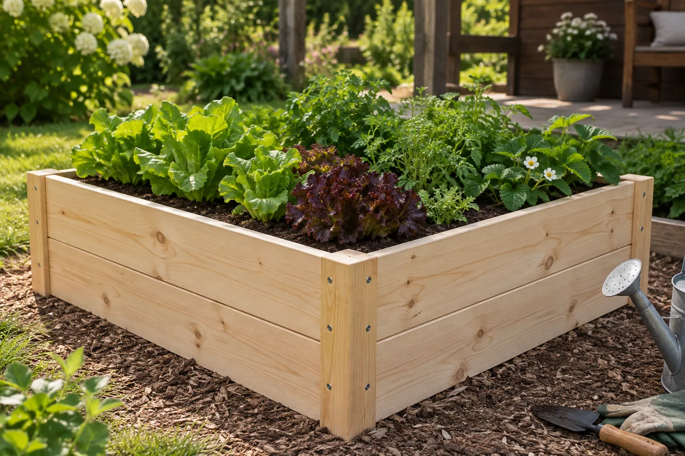
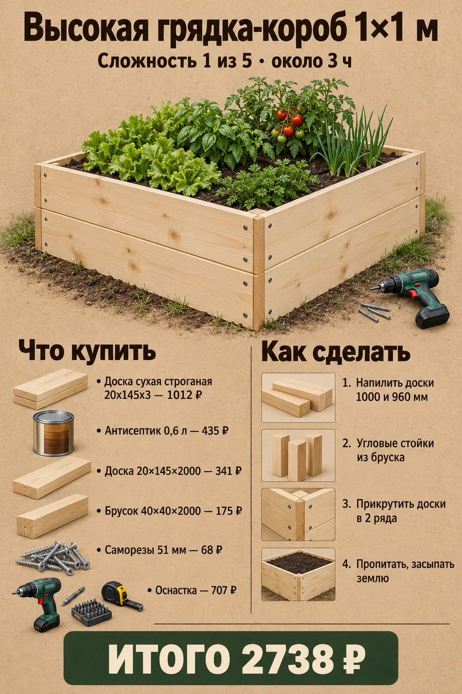
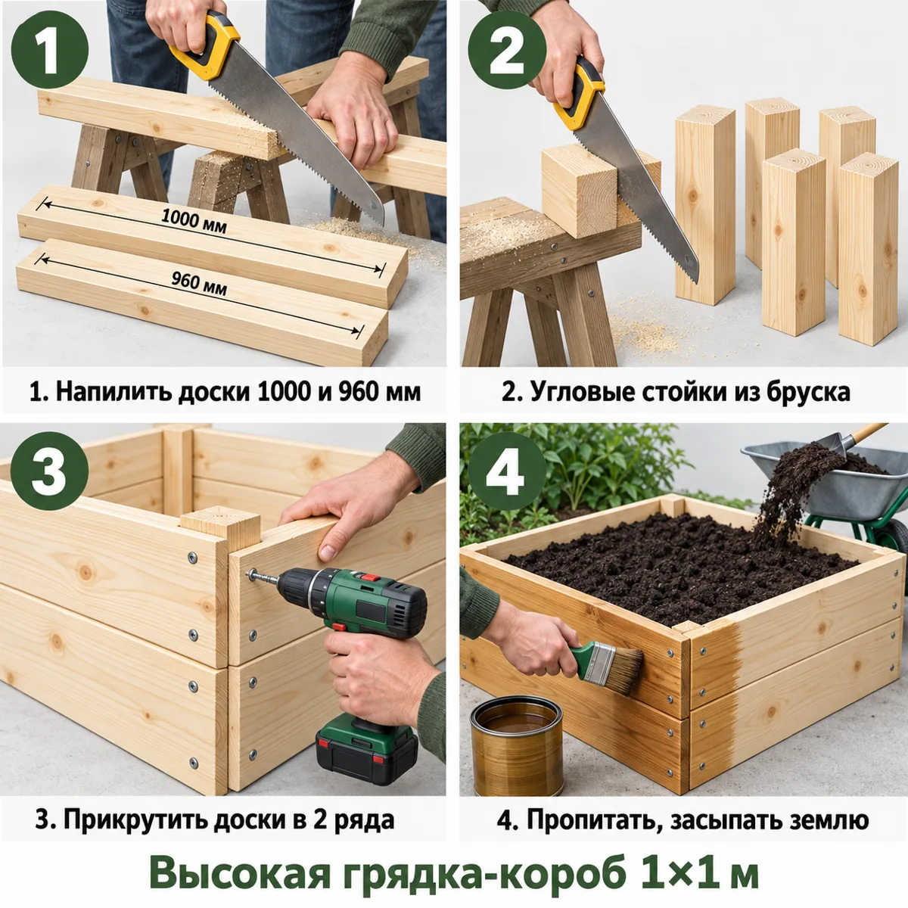
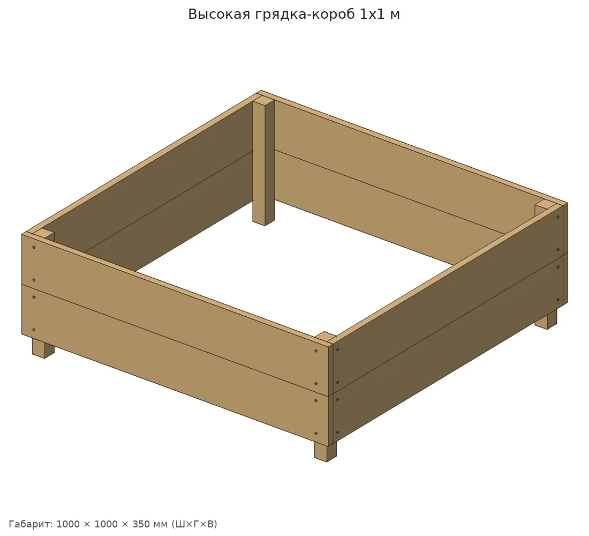
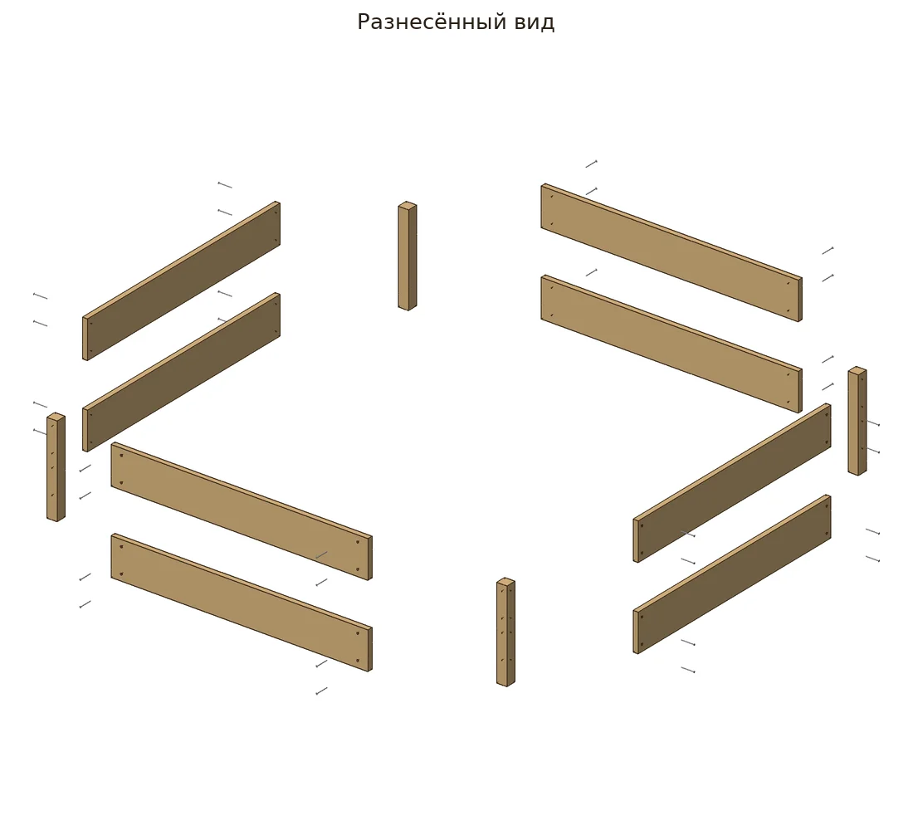
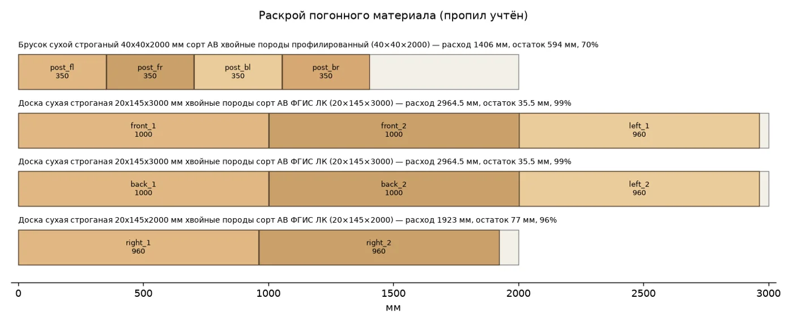
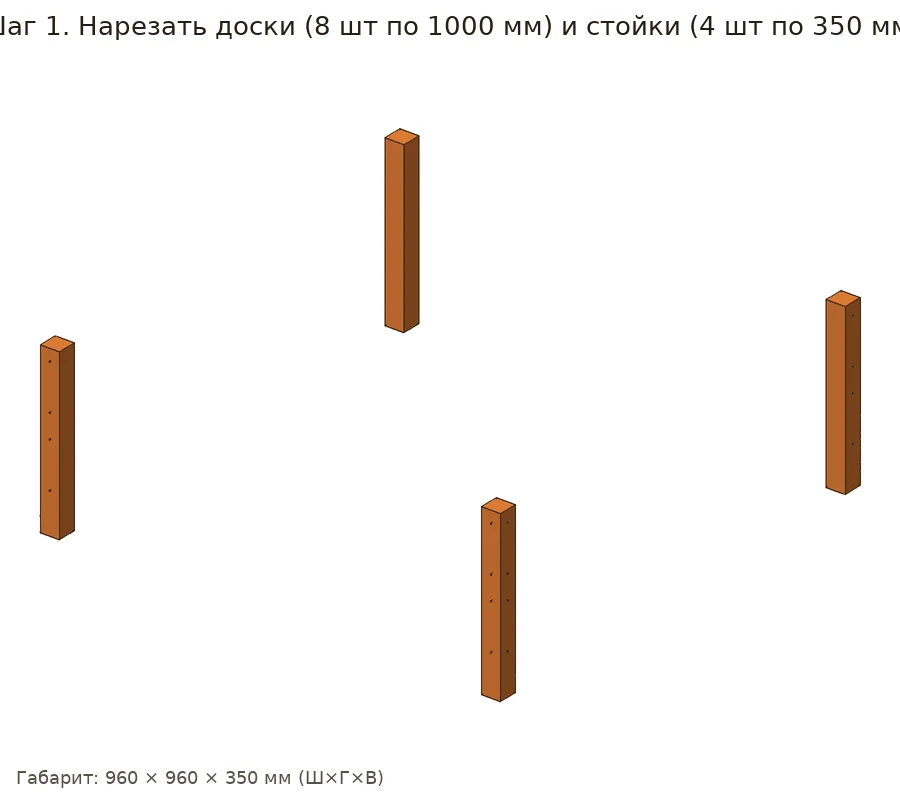
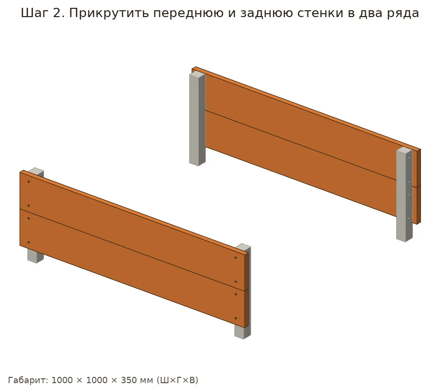
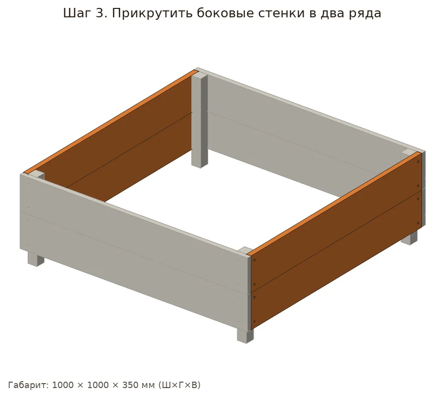
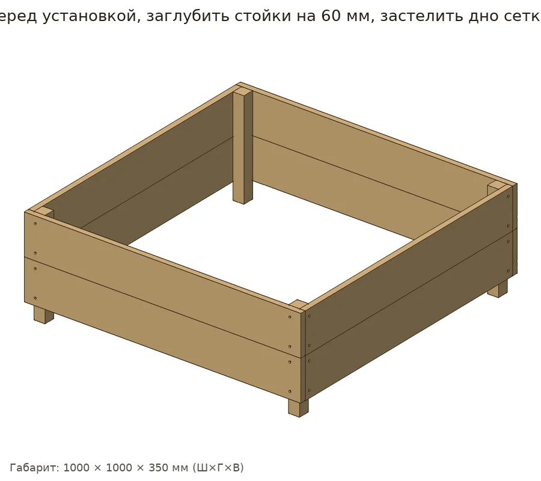

Короб на дачу: земля прогревается раньше, меньше сорняков. Две доски в высоту, угловые стойки из бруска.


| Позиция | Зачем | Кол-во | Цена | Сумма |
|---|---|---|---|---|
| материал | ||||
| Брусок 40×40×2000 Брусок сухой строганый 40х40х2000 мм сорт АВ хвойные породы профилированный · арт. 1092607 |
раскрой: 1 заготовка по 2000 мм | 1 шт | 175 ₽ | 175 ₽ |
| Доска сухая строганая 20х145х3 Доска сухая строганая 20х145х3000 мм хвойные породы сорт АВ ФГИС ЛК · арт. 102356 |
раскрой: 2 заготовки по 3000 мм | 2 шт | 506 ₽ | 1012 ₽ |
| Доска 20×145×2000 Доска сухая строганая 20х145х2000 мм хвойные породы сорт АВ ФГИС ЛК · арт. 102355 |
раскрой: 1 заготовка по 2000 мм | 1 шт | 341 ₽ | 341 ₽ |
| крепёж | ||||
| Саморезы 51 мм Саморезы ГД 51x3,5 мм (18 шт.) · арт. 125772 |
нужно 32 шт. + запас → 36; в упаковке 18 | 2 упак | 34 ₽ | 68 ₽ |
| отделка | ||||
| Антисептик 0,6 л Антисептик Dali универсальный биозащитный 0,6 л бесцветный · арт. 1098347 |
нужно ≈0.478 л | 1 шт | 435 ₽ | 435 ₽ |
| оснастка | ||||
| Бита PH2 Бита Hesler PH2 магнитная 25 мм (882083) · арт. 882083 |
саморезы | 1 шт | 33 ₽ | 33 ₽ |
| Сверло по дереву спиральное Vi Сверло по дереву спиральное Vira 3х60 мм с зенкером (552053) · арт. 684796 |
утопить головки | 1 шт | 176 ₽ | 176 ₽ |
| Ножовка по дереву Ножовка по дереву 400 мм 9 зуб/дюйм средний зуб · арт. 681543 |
раскрой | 1 шт | 226 ₽ | 226 ₽ |
| Стусло Стусло Сибртех пластиковое 300х65 мм (22571) · арт. 968520 |
ровные торцы 90°/45° | 1 шт | 143 ₽ | 143 ₽ |
| Рулетка Рулетка с фиксатором 3 м x 16 мм · арт. 159373 |
разметка | 1 шт | 99 ₽ | 99 ₽ |
| Карандаш Карандаш строительный малярный Hesler (2 шт.) · арт. 125418 |
разметка | 1 упак | 30 ₽ | 30 ₽ |
| Итого, включая оснастку 707 ₽ | 2738 ₽ | |||
Источник идеи: http://sibsosna.ru/poleznaia-informatsiia/po-tematikam-bazy-znanij/primenenie/kak-sdelat-g. Проект переработан под шуруповёрт 12 В и ручной инструмент.
Параметрическая 3D-модель с настоящими отверстиями, крепёж расставлен по правилам (Eurocode 5, упрощённо для DIY), раскрой с учётом пропила, закупка упаковками. Габарит модели 1000×1000×350 мм, масса ≈12.49 кг. Прочность не рассчитывалась.







Проверка пройдена: ошибок и предупреждений нет.
| Соединение | Крепёж | Шт. | Заход | Засверловка |
|---|---|---|---|---|
| Передняя доска, ряд 1 → Стойка передняя левая | 3.5×51 | 2 | 31 мм | сверло 2.5 мм |
| Передняя доска, ряд 1 → Стойка передняя правая | 3.5×51 | 2 | 31 мм | сверло 2.5 мм |
| Передняя доска, ряд 2 → Стойка передняя левая | 3.5×51 | 2 | 31 мм | сверло 2.5 мм |
| Передняя доска, ряд 2 → Стойка передняя правая | 3.5×51 | 2 | 31 мм | сверло 2.5 мм |
| Задняя доска, ряд 1 → Стойка задняя левая | 3.5×51 | 2 | 31 мм | сверло 2.5 мм |
| Задняя доска, ряд 1 → Стойка задняя правая | 3.5×51 | 2 | 31 мм | сверло 2.5 мм |
| Задняя доска, ряд 2 → Стойка задняя левая | 3.5×51 | 2 | 31 мм | сверло 2.5 мм |
| Задняя доска, ряд 2 → Стойка задняя правая | 3.5×51 | 2 | 31 мм | сверло 2.5 мм |
| Левая доска, ряд 1 → Стойка передняя левая | 3.5×51 | 2 | 31 мм | сверло 2.5 мм |
| Левая доска, ряд 1 → Стойка задняя левая | 3.5×51 | 2 | 31 мм | сверло 2.5 мм |
| Левая доска, ряд 2 → Стойка передняя левая | 3.5×51 | 2 | 31 мм | сверло 2.5 мм |
| Левая доска, ряд 2 → Стойка задняя левая | 3.5×51 | 2 | 31 мм | сверло 2.5 мм |
| Правая доска, ряд 1 → Стойка передняя правая | 3.5×51 | 2 | 31 мм | сверло 2.5 мм |
| Правая доска, ряд 1 → Стойка задняя правая | 3.5×51 | 2 | 31 мм | сверло 2.5 мм |
| Правая доска, ряд 2 → Стойка передняя правая | 3.5×51 | 2 | 31 мм | сверло 2.5 мм |
| Правая доска, ряд 2 → Стойка задняя правая | 3.5×51 | 2 | 31 мм | сверло 2.5 мм |
Брусок сосна 40х40: 1406 мм
Доска сосна 20х145: 7852 мм
Саморез 3.5×51: 32 шт
Антисептик: ≈0.48 л
Смета «Что купить в Петровиче» выше посчитана этой же моделью: упаковки, замены и оснастка.